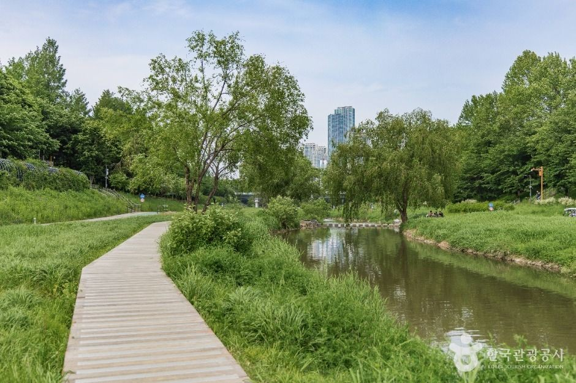
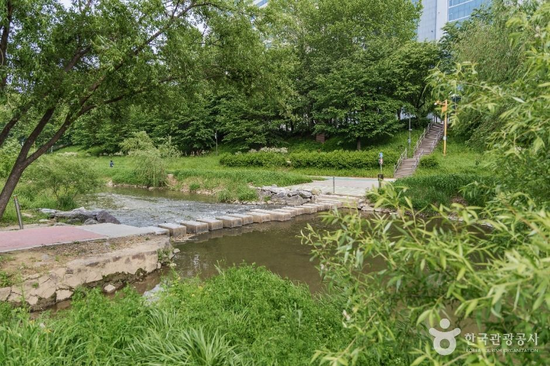
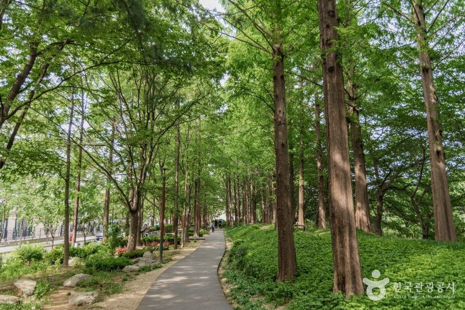
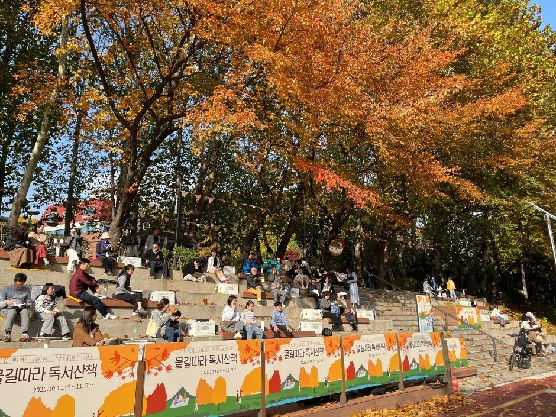
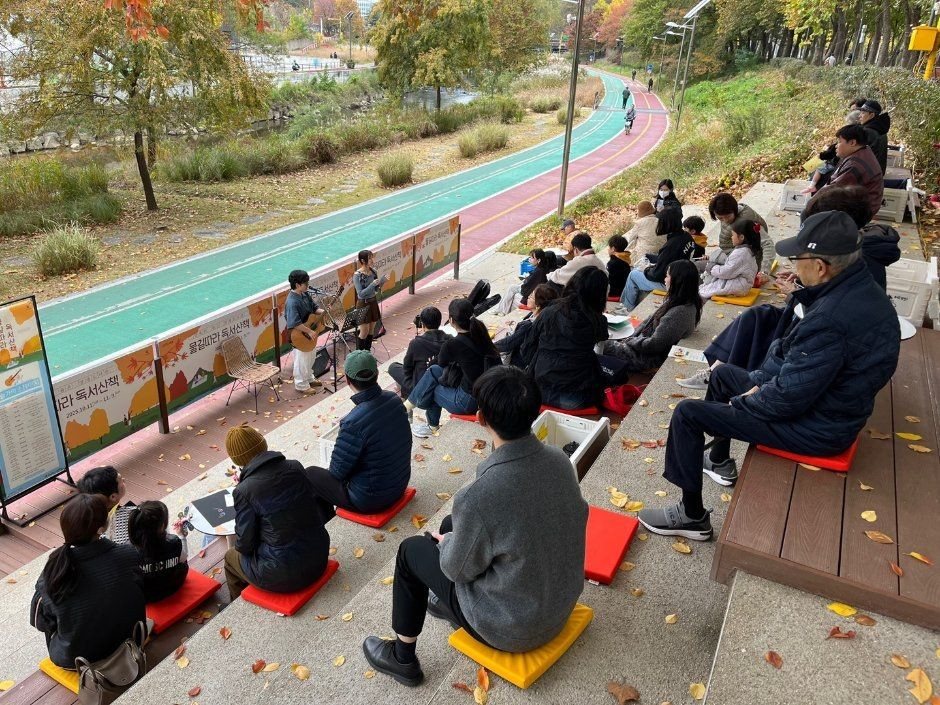

Yangjaecheon Stream Guide: Overview
This Yangjaecheon Stream guide covers one of southern Seoul's best-loved riverside walks. Yangjaecheon runs for 15.6 km from Gwacheon through Seocho-gu and Gangnam-gu. Its banks have walking and cycling paths, cherry trees, metasequoia avenues and Yangjae Citizen's Forest. It is only a few subway stops from Gangnam Station, but it feels far quieter.
Gangnam-gu says Yangjaecheon was the first stream in Korea restored with ecological engineering, in 1995, and it was named a Seoul Future Heritage in 2015. We checked the details below against Korea Tourism Organization (KTO) data, Seoul's official tourism site and media hub, Gangnam-gu, and the Encyclopedia of Korean Culture.
"A green stream walk between Gangnam's towers, with cherry blossoms in spring and red metasequoias in autumn."

The Seocho Walking Path: Yeongdong 1-gyo to 2-gyo
The stretch between Yeongdong 1-gyo and Yeongdong 2-gyo in Seocho-gu is the classic Yangjaecheon walk. It has a riverside path by the water and a higher hill path on the bank, each about 2.2 km one way. Seoul's media hub describes the hill path as an easy, roughly 2 m wide surfaced track under a tunnel of cherry trees and metasequoias.
Down by the water there are stepping stones, a waterside stage, rest areas and a small rice-paddy learning field. Bridges connect the north and south banks, so you can walk out on one side and back on the other. KTO notes that walkers and cyclists have separate paths here.

Yangjae Citizen's Forest and the Metasequoia Paths
Right by the stream, Yangjae Citizen's Forest (양재시민의숲, 99 Maeheon-ro) is, according to Seoul's tourism site, the first park in Korea designed as a forest rather than a lawn with trees. It is dense with tall trees and is open all year.
Its best-known feature is the metasequoia avenues. The most photographed is the Sasaek-ui Gil ("path of contemplation") in the neighbouring Seocho Art Park, where sculptures stand among the trees. In autumn the needles turn rusty red and cover the ground.

Seasonal Events: Lanterns, Cherry Blossoms and Picture Books
In spring, the Seocho Cultural Center runs the Yangjaecheon Cherry Blossom Lantern Festival on the cherry-blossom path between Yeongdong 1-gyo and 2-gyo. The 8th edition ran from March 30 to April 19, 2026, 1–8 pm, with lantern lighting, performances, guided tours, hands-on activities and food stalls. Admission was free.
In autumn, Seocho-gu Yangjae Library took reading outdoors with "A Picture-Book Journey Along the Waterway". It ran on weekends from October 10 to November 8, 2026 at the forest-path library in front of the library at 33 Yangjaecheon-ro. The programme was built around five themes (relationships, emotions, dreams and growth, healing, and nature), with picture-book displays, author talks, performances and family activities on the lawns, steps and riverside path. Both events have ended; check Seocho-gu notices for 2027 dates.


Visitor Information
| Item | Details |
|---|---|
| Yangjaecheon (Seocho) | Yangjae-dong, Seocho-gu, Seoul (서울특별시 서초구 양재동); main walk Yeongdong 1-gyo–2-gyo |
| Yangjae Citizen's Forest | 99 Maeheon-ro, Seocho-gu (서울 서초구 매헌로 99) |
| Yangjae Library | 33 Yangjaecheon-ro, Seocho-gu (서울 서초구 양재천로 33); +82-2-3486-4043 |
| Hours | Paths and forest open 24 hours, all year |
| Admission | Free |
| Parking | Yangjae Citizen's Forest public car park, 08:00–21:00, 1,500 KRW per 30 minutes |
| Nearest stations | Yangjae Citizen's Forest (Shinbundang Line) exit 2, about 500 m; Yangjae (Line 3 exit 6 / Shinbundang exit 8), about 1 km |
| Info | Seocho-gu Garden & Leisure Division, +82-2-2155-7148 |
| Events | Cherry Blossom Lantern Festival (Mar 30–Apr 19, 2026); picture-book library (weekends, Oct 10–Nov 8, 2026) |
Sources: Korea Tourism Organization data for Yangjaecheon Neighbourhood Park (양재천 근린공원), the Yangjaecheon Cherry Blossom Lantern Festival and the Yangjae Library picture-book festival; Visit Seoul (Yangjaecheon & Tancheon; Healing Forest Paths 10); Seoul media hub; Gangnam-gu Office; Encyclopedia of Korean Culture. Photos © Korea Tourism Organization (KOGL Type 1 and Type 3, attribution), unmodified. No AI-generated images.
Getting There
The easiest stop is Yangjae Citizen's Forest Station on the Shinbundang Line, two stops south of Gangnam Station. Leave by exit 2 and walk about 10 minutes to the stream. If you are coming from Line 3, get off at Yangjae Station (exit 6) and walk about 20 minutes south-east.
A good half-day: walk under the metasequoias in Yangjae Citizen's Forest, cross to the stream, then follow the hill path east from Yeongdong 1-gyo to 2-gyo and come back along the water. Cyclists can follow the path downstream into Gangnam-gu toward Tancheon.
Tips for Visiting
- Pick a loop: go out on the hill path and come back on the riverside path for different views.
- Watch for bikes: stay on the walking side; the cycle path is busy on weekends.
- Go late in the day: in late November, Seoul's sunset is around 5:15 pm, and evening light on the metasequoias is lovely.
- Dress for the wind: the open stream valley feels colder than the streets in winter.
- Bring a T-money card: it covers the Shinbundang Line and buses; cafés are on the streets above the stream.
How It Compares with Other Seoul Stream Walks
| Yangjaecheon | Cheonggyecheon | Ui-cheon | |
|---|---|---|---|
| Setting | Ecological stream with forest park | Downtown restored stream | Mountain valley to neighbourhood stream |
| Crowds | Moderate; local walkers and cyclists | Busy, especially evenings | Quiet, local |
| Highlights | Cherry trees, metasequoias, Yangjae Citizen's Forest | City lights, lantern festival | Ui-dong Valley, Jaeganjeong café |
| Access | Shinbundang Line / Line 3 | Lines 1, 2, 5 | Ui-Sinseol Line / Line 4 |
| Best for | Long, flat walks or rides near Gangnam | First-time visitors | Valley walks near Bukhansan |
Who It Suits
- Great for: Travellers staying in Gangnam who want green space without leaving the city.
- Great for: Runners and cyclists looking for a long, flat path.
- Great for: Families with strollers, thanks to wide, even paths.
- Less ideal: Visitors looking for palaces, markets or nightlife; this is a nature walk.
Plan Your Seoul Trip
Yangjaecheon Stream FAQ
Where is Yangjaecheon Stream?
Yangjaecheon (양재천) rises on Gwanaksan and Cheonggyesan in Gwacheon, Gyeonggi-do, then flows east through Seocho-gu and Gangnam-gu in southern Seoul and joins Tancheon at Daechi-dong, which flows on to the Han River. The most popular stretch for walkers is in Seocho-gu between Yeongdong 1-gyo and Yeongdong 2-gyo bridges, near Yangjae Citizen's Forest.
How do I get to Yangjaecheon?
Take the Shinbundang Line to Yangjae Citizen's Forest (Maeheon) Station. Exit 2 is about 500 m, or a 10-minute walk, from the Yeongdong 1-gyo–2-gyo walking path. From Yangjae Station (Line 3 exit 6 or Shinbundang Line exit 8), it is about 1 km, or a 20-minute walk.
Is there an entrance fee?
No. Yangjaecheon's riverside paths and Yangjae Citizen's Forest are free and open all year, 24 hours. Seasonal events such as the cherry blossom lantern festival and the outdoor picture-book library have also been free.
When is the best time to visit?
Spring and autumn. In early April, cherry trees line the Seocho stretch, and the 2026 Yangjaecheon Cherry Blossom Lantern Festival ran March 30 to April 19. In late October and November, metasequoias and other trees turn red and gold; Seoul lists the Yangjaecheon walk among its 96 autumn-foliage roads. Winter walks are quiet but cold.
What was the outdoor picture-book library?
'Yangjae Library Embracing Yangjaecheon: A Picture-Book Journey Along the Waterway' was a free outdoor reading festival run by Seocho-gu, the Seocho Cultural Foundation and Seocho-gu Yangjae Library. It ran on weekends from October 10 to November 8, 2026 at the Yangjae Osolsup (forest-path) Library in front of the library at 33 Yangjaecheon-ro. A 2027 edition has not been announced; ask the library on +82-2-3486-4043.